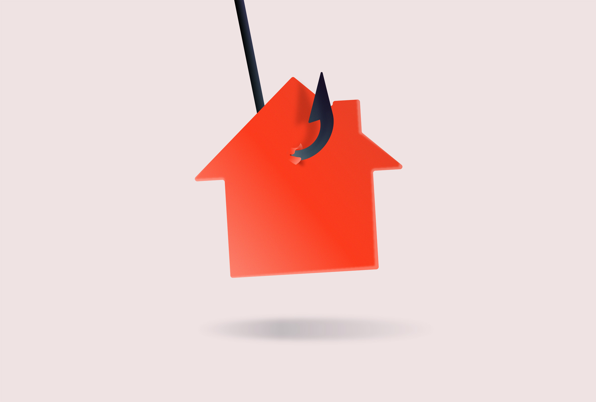

Hyper Text Markup Language is the standard Markup.Taking to the stage will be the passionate storyteller Wendy Huynh, who will be walking us through the relaunch of her Arcades magazine, which tells creative tales from the suburbs. Following this will be Brindha Kumar, an illustrator whose has recently taken centre stage at Selfridges 
Rounding up Marchs Nicer Tuesdays will be a Q&A with Aries Moross, a creative whose vision knows no bounds. A designer, illustrator and creative director who now heads their own studio, Aries has been a recurring name on the Is Nice That site since 2007, and their work has gone from strength to strength with every passing year. Now at the forefront of bold, pop-culture infused design, in 2022 Aries rebranded London famous Roundhouse venue, and in 2019 they worked alongside